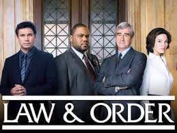
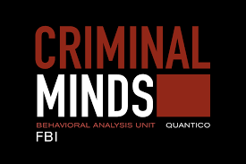
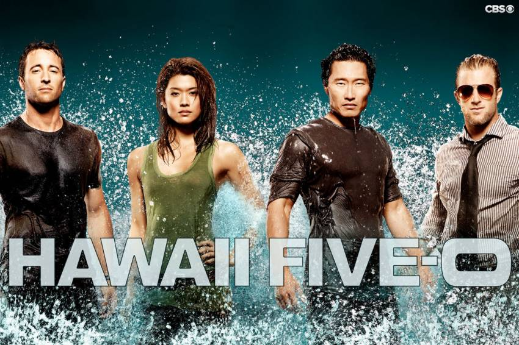

What are crime series?
A crime drama is a type of drama show which has as its primary focus or heroes people whose main occupation is to investigate, punish or commit crimes—especially homicide, assault, robbery or racketeering. Notable crime dramas in TV history include Dragnet, Hill Street Blues, Homicide: Life on the Street, NYPD Blue, Law and Order, The Sopranos and CSI. Crime series have been popular for years, it color our view of the world and change how we see things because crimes are happening everyday, unfortunately, and we’ve all heard stories of violence,we are constantly hearing about crime through the news reports so this kind of series show people things that can happen to them, advertise them without necessarily making it direct. Women on crime shows are often victims, but they're also detectives, prosecutors, and sometimes even murderers. They're capable of anything, whether it's great or terrible. You're capable of all those things in real life too mostly the great.Getting scared gives you an adrenaline burst that can be really enjoyable depending on your personality type, the added security of being in your own home makes this feel like more of a rush than a panic attack. Even the big media companies, such as CBS airs shows like Criminal Minds, which is a fictional show about murder, these stories get you wondering, what if I were in that situation, there’s a need to explore the dark side of human nature, there’s a need to figure out what could make us so angry. Some people, including me, have some kind of fascination with crime dramas, whether it be true crime or fictional crime dramas. For example, there is Investigation Discovery which is an television channel specifically dedicated to the true crime genre. Since I was a kid there was nothing I love more than turning on the television at night after doing all my homework and trying to solve a mystery, whether it’s an easily-wrapped hour long case on a show like Bones or a longer, sprawling mystery that slowly expands over an entire season, I’m ready and willing to submit my guesses. Whether it be the beginning search of a murder scene or catching the killer in the end, the suspense alone is just one of the many reasons why I love crime series. My favourite criminal series are the ones showed in the collage, maybe they were premiered a long time ago but seriously they are my favorite, I enjoy watching them, feel that adrenaline, anger while I see them, I could see them for the rest of my life and I wouldn't get bored.
Why I like them...

Category:
Category
Example
Synopsis
Logo
Criminals
Breaking Bad
Breaking Bad is an American crime drama television series created and produced by Vince Gilligan. The show originally aired on the AMC network for five seasons, from January 20, 2008, to September 29, 2013. It tells the story of Walter White (Bryan Cranston), a struggling high school chem#00FFCBistry teacher diagnosed with inoperable lung cancer. Together with his former student Jesse Pinkman (Aaron Paul), White turns to a life of crime, producing and selling crystallized methamphetamine to secure his family's financial future before he dies, while navigating the dangers of the criminal world

Detective
Law & Order
Law & Order is an American police procedural and legal drama television series, created by Dick Wolf and part of the Law & Order franchise. It originally aired on NBC and, in syndication, on various cable networks. Law & Order premiered on September 13, 1990, and completed its 20th and final season on May 24, 2010. At the time of its cancellation, Law & Order was the longest-running crime drama on American primetime television. Its record of 20 seasons is a tie with Gunsmoke (1955–1975) for the longest-running live-action scripted American prime-time series with ongoing characters. Although it has fewer episodes than Gunsmoke, Law & Order ranks as the longest-running hour-long primetime TV series.

Federal agents
Criminal Minds
Criminal Minds is an American police procedural crime drama television series created by Jeff Davis, and is the original show in the Criminal Minds franchise. It premiered on September 22, 2005, on the broadcast network CBS and October 5, 2005 on CTV. The series is produced by The Mark Gordon Company, in association with CBS Television Studios and ABC Studios (a subsidiary of The Walt Disney Company). Criminal Minds is set primarily at the FBI's Behavioral Analysis Unit (BAU) based in Quantico, Virginia.The series follows a group of FBI profilers who set about catching various criminals through behavioral profiling. The plot focuses on the team working cases and on the personal lives of the characters, depicting the hardened life and statutory requirements of a profiler.

Police
Hawaii Five 0
Hawaii Five-0 is an American action police procedural television series, which premiered on Monday, September 20, 2010 on CBS. The series is a reboot of the original series, which aired on CBS from 1968 to 1980. Like the original, it follows an elite state police task force set up to fight crime in the state of Hawaii.The series is produced by K/O Paper Products and 101st Street Television in association with CBS Productions, originally an in-name-only unit of but folded into CBS Television Studios

TOP 10
If you want to know more...
SUGGESTIONS
Name:
Last Name:
City:
State
Address:
Comments